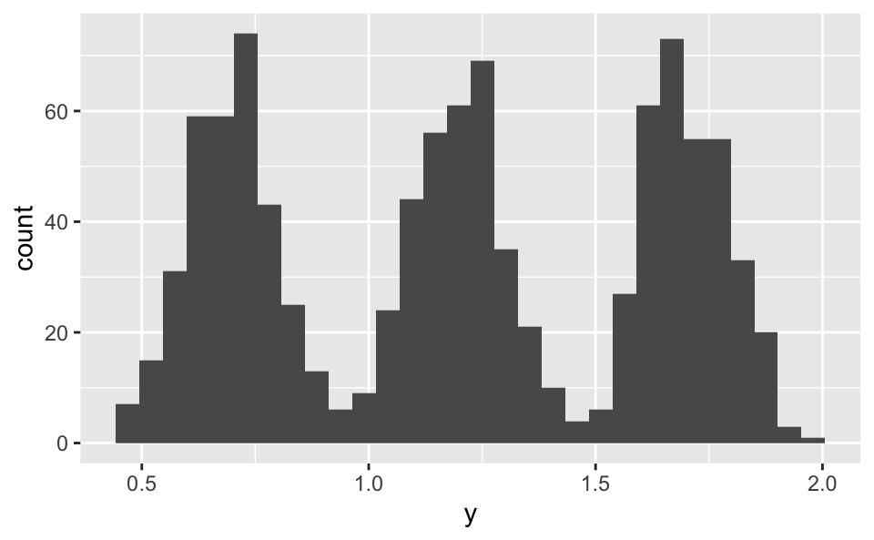
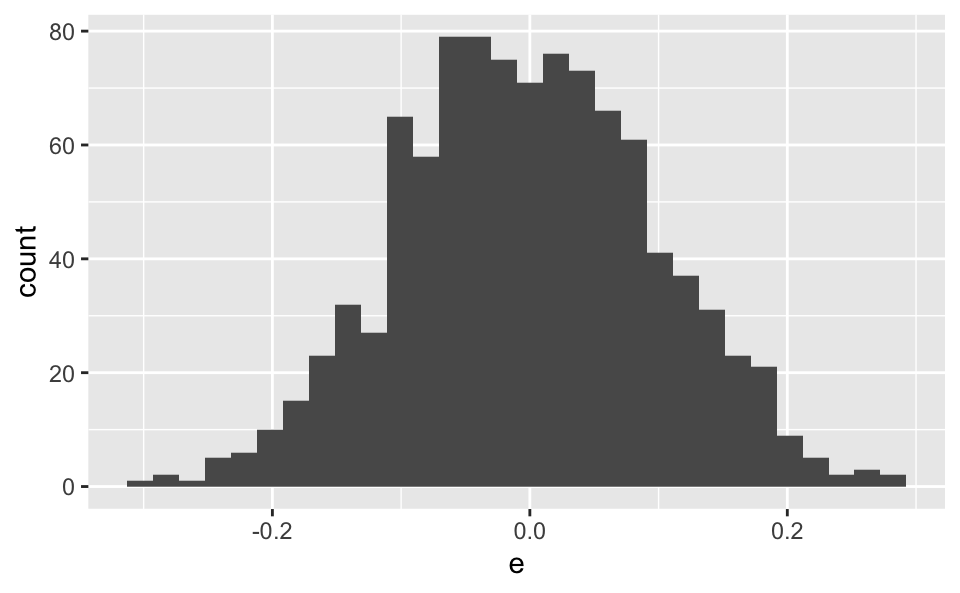
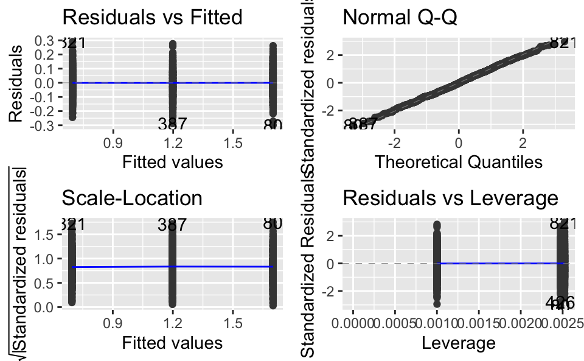

1 Motivation
Manchmal hört man, die Regression verlange, dass die Y-Variable normalverteilt sei. Das ist keine Annahme der Regression. Stattdessen sollten die Residuen normalverteilt sein.
Übrigens ist die Normalverteilung der Residuen laut Gelman und Hill 2007 keine wichtige Annahmen in vielen Situationen: Der Verlauf der Regressionsgeraden wird nämlich die die Normalität der Residuen nicht beeinflusst (vgl. S. 46f).
Die Normalität der Residuen spielt dann eine Rolle, wenn man an der Güte individueller Vorhersagen (also für einzelne Beobachtungen) interessiert ist.
1.1 Setup
library(tidyverse)## ── Attaching packages ─────────────────────────────────────── tidyverse 1.3.1 ──## ✓ ggplot2 3.3.5 ✓ purrr 0.3.4
## ✓ tibble 3.1.2 ✓ dplyr 1.0.7
## ✓ tidyr 1.1.3 ✓ stringr 1.4.0
## ✓ readr 1.4.0 ✓ forcats 0.5.1## ── Conflicts ────────────────────────────────────────── tidyverse_conflicts() ──
## x dplyr::filter() masks stats::filter()
## x dplyr::lag() masks stats::lag()library(ggfortify)2 Datenbeispiel
2.1 Daten simulieren
d <-
tibble(
x = sample(1:3, size = 999, prob = c(.33, .33, .33), replace = TRUE),
e = rnorm(n = 999, sd = 0.1),
y = 0.2 + 0.5*x + e
)2.2 Verteilung von Y
\(Y\) ist klar nicht normalverteilt:
d %>%
ggplot(aes(x = y)) +
geom_histogram()
2.3 Verteilung der Residuen
Die Residuen sind normalverteilt:
d %>%
ggplot(aes(x = e)) +
geom_histogram() 
2.4 Y vs. X
ggplot(d) +
aes(x = x, y = y) +
geom_jitter() +
geom_smooth(method = "lm")
2.5 Residuen
lm1 <- lm(y ~ x, data = d)autoplot(lm1)
Keine Verletzungen der Annahmen in den Residuen erkennbar.